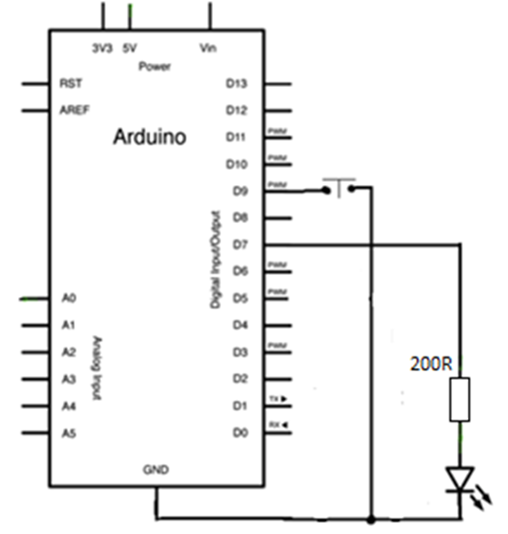

~
VJ5-Upravljanje trčećim svjetlom tipkalom
5.1 Upravljanje LED diodom tipkalom
Tipkalo je elektronički element (komponenta) koji je spojen samo dok je pritisnut. ( NIJE SKLOPKA ). Ima dva stanja, 1-0, true-false, HIGH-LOW.
Koristi se na većini današnjih uređaja kao što su mobiteli, tableti, tipkovnice, daljinski, mikrovalna, perilice, alarmi itd. Na mobitelu tipkalom ugađamo jačinu zvuka, uključujemo ga, a neki imaju i „home“ tipku.
Koristeći funkciju digitalRead() čitamo napon digitalnog pina na koji je spojeno tipkalo. Napon smije biti 0V ili 5V.
Električna shema

Montažna shema
Upišite sljedeći program.
int tipkalo = 0;
void setup() {
pinMode(7, OUTPUT);
pinMode(9, INPUT_PULLUP);
}
void loop() {
tipkalo = digitalRead(9);
if (tipkalo == HIGH) {
digitalWrite(7, LOW);
}
else {
digitalWrite(7, HIGH);
}
}
LED dioda bi trebala svijetliti kada je tipkalo pritisnuto.
5.2 Upravljanje trčećim svjetlom tipkalom
Električna shema

Montažna shema
Upišite sljedeći program.
int tipkalo;
int pauza = 500;
int korak = 20;
void setup() {
pinMode(7, OUTPUT);
pinMode(6, OUTPUT);
pinMode(5, OUTPUT);
pinMode(4, OUTPUT);
pinMode(9, INPUT_PULLUP);
Serial.begin(9600);
}
void loop() {
digitalWrite(7, HIGH);
brzina(); Serial.println(pauza);
delay(pauza);
digitalWrite(7, LOW);
digitalWrite(6, HIGH);
brzina(); Serial.println(pauza);
delay(pauza);
digitalWrite(6, LOW);
digitalWrite(5, HIGH);
brzina(); Serial.println(pauza);
delay(pauza);
digitalWrite(5, LOW);
digitalWrite(4, HIGH);
brzina(); Serial.println(pauza);
delay(pauza);
digitalWrite(4, LOW);
}
void brzina() {
tipkalo = digitalRead(9);
if (tipkalo == LOW) {
pauza = pauza - korak;
if (pauza <= 140) pauza = 140;
}
else {
pauza = pauza + korak;
if (pauza >= 500) pauza = 500;
}
}
Pritisnutim tipkalom smanjujemo vrijednost varijable pauza.
Vrijednost varijable pauza ispisujemo u Serijskom monitoru.
Koja je najmanja vrijednost te varijable ? UPIŠITE VRIJEDNOST________
pinMode (pin, INPUT_PULLUP); konfigurira digitalni pin kao ulazni sa spojenim unutarnjim pull-up otpornikom.
Što su to pull-down i pull-up otpornici ? (predavanje prof. Ecimovića)
digitalRead() očitava digitalni napon sa digitalnog ulaznog pina ( 0V ili 5V )
Sintaksa: digitalRead(pin)
Argumenti: pin je broj digitalnog pina
VAŽNO! Vraća vrijednost HIGH ili LOW ( 1 ili 0 ) !
Vraćenu vrijednost HIGH ili LOW pridružujemo VARIJABLI.
Primjer:
VARIJABLA= digitalRead(broj pina);
if – else - dvostruka naredba grananja
if (uvjetni izraz)
{
// blok naredbi
}
else
{
// blok naredbi
}
© . Sva prava pridržana.